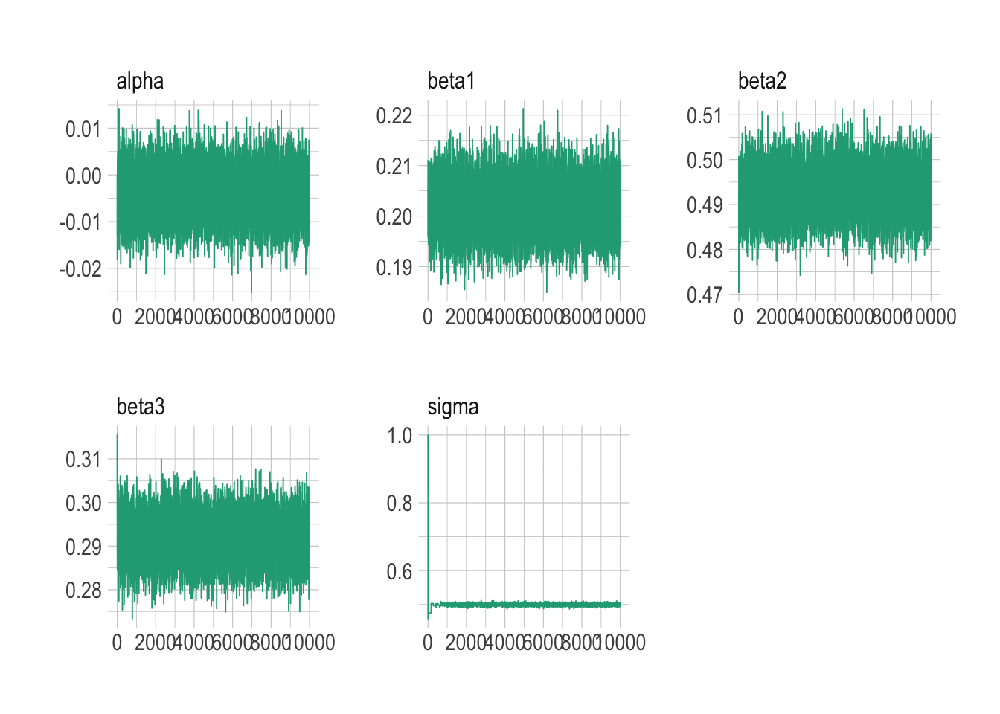
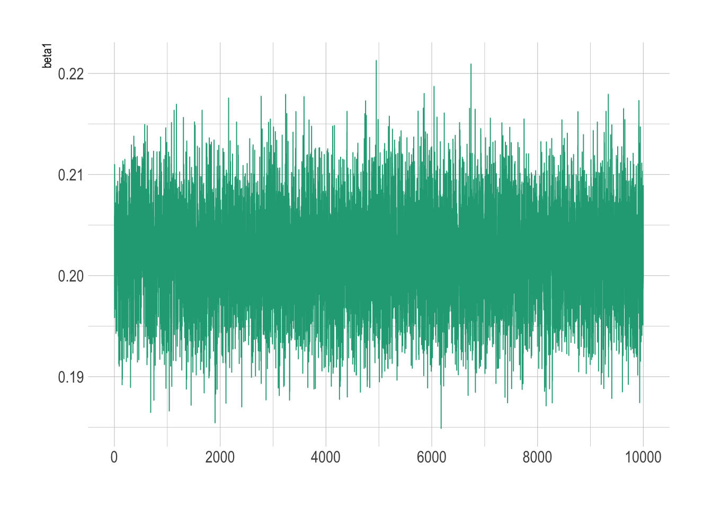
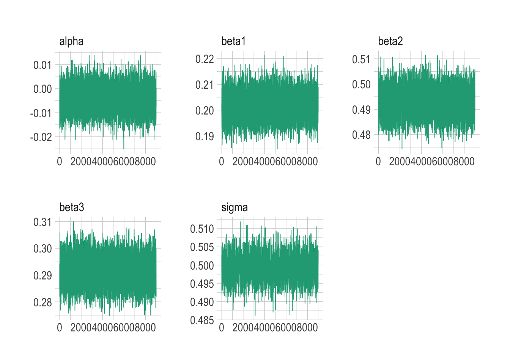
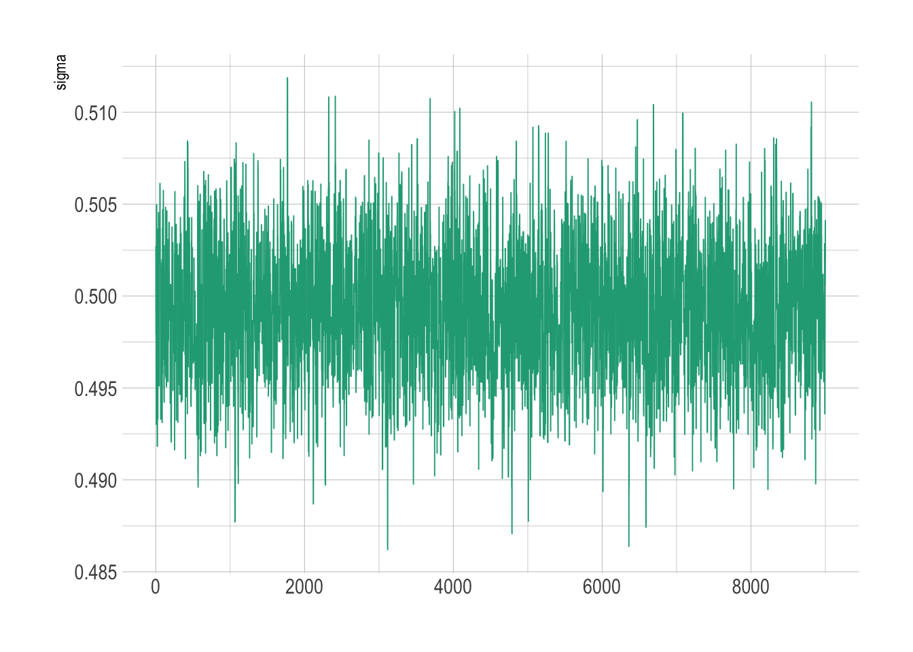
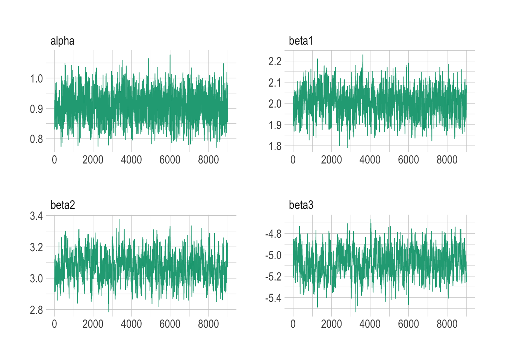

set.seed(1)
p <- 3 # number of explanatory variables
n <- 10000 # number of observations
X <- matrix(round(rnorm(p * n), 2), nrow = n, ncol = p) # explanatory variables
true_betas <- c(c(0.2, 0.5, 0.3)) # coefficients for beta1, beta2, beta3
sigma <- 0.5
y <- rnorm(n, X %*% true_betas, sigma)Introduction to Bayesian Methods
SHARP Bayesian Modeling for Environmental Health Workshop
Goal of this computing lab session
This goal of this lab is to take some models and concepts from the Introduction to Bayesian Methods lecture and introduce you to the way NIMBLE works.
What’s going to happen in this lab session?
During this lab session, we will:
- Explore how
NIMBLEis written and works; - Write some common regression models (Normal, Additional: logistic regression, Poisson);
- Understand how basic model assessment is made; and
- Test out how adjustments of models are made via different priors and more samples.
Introduction
NIMBLE code is written in a slightly unusual format if you’re used to just using base R. It is written in the style of a program called BUGS, which came out a few decades ago and was developed at Imperial College London. But you don’t really need to know about BUGS to be able to use NIMBLE.
We will start with some straightforward examples for situations you’re likely familiar with to introduce the style of writing models. These examples will feature basic regression models using linear predictors.
Some of these models have been adapted from NIMBLE’s examples.
Normal-Normal example
\[ \begin{split} y_i &\sim \text{Normal}(\mu_i, \sigma) \quad i = 1,..., N \\ \mu_i &= \alpha + \beta_1 x_1 + \beta_2 x_2 + \beta_3 x_3 \end{split} \]
First create some example data:
Exploratory data analysis
What does the dataset look like?
df <- tibble(y = y, x1 = X[, 1], x2 = X[, 2], x3 = X[, 3])
df %>% head()# A tibble: 6 × 4
y x1 x2 x3
<dbl> <dbl> <dbl> <dbl>
1 -0.145 -0.63 -0.8 0.24
2 0.0248 0.18 -1.06 0.24
3 -1.09 -0.84 -1.04 -0.64
4 -1.00 1.6 -1.19 -1.93
5 -0.138 0.33 -0.5 1.04
6 0.345 -0.82 -0.52 -0.28What does equivalent frequentist model output look like for reference? By the way, what’s the interpretation of the 95% CI in this frequentist world?
model_freq <- lm(
y ~ x1 + x2 + x3,
data = df
)
central_est <- t(t(model_freq$coefficients))
conf_int <- confint(model_freq)
cbind(central_est, conf_int) 2.5 % 97.5 %
(Intercept) -0.00272699 -0.01251412 0.007060142
x1 0.20196677 0.19229912 0.211634407
x2 0.49277663 0.48289869 0.502654568
x3 0.29160573 0.28189340 0.301318063Let’s rewrite this model in a Bayesian framework using NIMBLE. It can be written in lots of different ways, but here we’re going to try and stick to defining the priors first, then writing the formula.
code <- nimbleCode({
# priors for parameters
alpha ~ dnorm(0, sd = 100) # prior for alpha
beta1 ~ dnorm(0, sd = 100) # prior for beta1
beta2 ~ dnorm(0, sd = 100) # prior for beta2
beta3 ~ dnorm(0, sd = 100) # prior for beta3
sigma ~ dunif(0, 100) # prior for variance components
# regression formula
for (i in 1:n) {
# n is the number of observations we have in the data
mu[i] <- alpha + beta1 * x1[i] + beta2 * x2[i] + beta3 * x3[i] # manual entry of linear predictors
y[i] ~ dnorm(mu[i], sd = sigma)
}
})Before running NIMBLE, extract data for three predictors and center for better MCMC performance.
x1 <- X[, 1] - mean(X[, 1])
x2 <- X[, 2] - mean(X[, 2])
x3 <- X[, 3] - mean(X[, 3])Final preparation of data into lists for input into NIMBLE MCMC running
constants <- list(n = n)
data <- list(y = y, x1 = x1, x2 = x2, x3 = x3)Set initial values for MCMC samples (very important for convergence)
inits <- list(alpha = 0, beta1 = 0, beta2 = 0, beta3 = 0, sigma = 1)The following code will establish which samples will be used in the sampling of the posteriors. It is not going to run the model yet. If there is a conjugate relationship apparent between prior and posterior (e.g., Normal-Normal, Binomial-Beta, Poisson-Gamma), NIMBLE will automatically detect it here. This is an example where there is a Normal-Normal conjugate relationship
model <- nimbleModel(code, constants = constants, data = data, inits = inits)Defining modelBuilding modelSetting data and initial valuesRunning calculate on model
[Note] Any error reports that follow may simply reflect missing values in model variables.Checking model sizes and dimensionsmcmcConf <- configureMCMC(model)===== Monitors =====
thin = 1: alpha, beta1, beta2, beta3, sigma
===== Samplers =====
RW sampler (1)
- sigma
conjugate sampler (4)
- alpha
- beta1
- beta2
- beta3Run the MCMC simulations. There are lots of arguments in the main function, nimbleMCMC(). Take a second to look through each of them and make sure you understand where they’re coming from and what they mean as each one is very important.
tic <- Sys.time()
nimbleMCMC_samples_initial <- nimbleMCMC(
code = code,
data = data,
constants = constants,
inits = inits,
niter = 10000, # run 10000 samples
setSeed = 1,
samplesAsCodaMCMC = TRUE
)Defining modelBuilding modelSetting data and initial valuesRunning calculate on model
[Note] Any error reports that follow may simply reflect missing values in model variables.Checking model sizes and dimensionsChecking model calculationsCompiling
[Note] This may take a minute.
[Note] Use 'showCompilerOutput = TRUE' to see C++ compilation details.running chain 1...|-------------|-------------|-------------|-------------|
|-------------------------------------------------------|toc <- Sys.time()
toc - ticTime difference of 49.812 secsWhat is the summary of each estimated parameter from the samples? The following operations will help us understand.
First a summary of how the statistics of the samples of each parameter look
summarise_draws(nimbleMCMC_samples_initial, default_summary_measures())# A tibble: 5 × 7
variable mean median sd mad q5 q95
<chr> <num> <num> <num> <num> <num> <num>
1 alpha -0.00395 -0.00388 0.00500 0.00498 -0.0122 0.00426
2 beta1 0.202 0.202 0.00492 0.00485 0.194 0.210
3 beta2 0.493 0.493 0.00506 0.00511 0.484 0.501
4 beta3 0.292 0.292 0.00499 0.00502 0.283 0.300
5 sigma 0.499 0.499 0.0122 0.00372 0.493 0.505 Then examine how well the model has converged, which typically is identified by how close each rhat value is to 1.00. If it is much above 1.00 (>1.05) then the samples will not be very well converged and therefore either the model is not well specified or there just needs to be more iterations of the MCMC. It is a little bit of an art to figure that out, but rhat helps.
summarise_draws(nimbleMCMC_samples_initial, default_convergence_measures())# A tibble: 5 × 4
variable rhat ess_bulk ess_tail
<chr> <num> <num> <num>
1 alpha 1.00 9936. 9714.
2 beta1 1.00 10026. 10110.
3 beta2 1.00 9990. 9857.
4 beta3 1.00 9536. 9755.
5 sigma 1.00 665. 190.What do the samples of one of the unknown parameters actually look like? Let’s have a look the parameters and their samples from running the model above.
mcmc_trace(nimbleMCMC_samples_initial)
Let’s now focus on beta1 (which we know is 0.2 from setting up initially).
mcmc_trace(nimbleMCMC_samples_initial, pars = c("beta1"))
It looks like the samples are converging quickly from the initial parameter to ~0.2 for beta1. But typically we will throw away some samples at the beginning to ensure that the transient samples (which is when the model samples haven’t stabilized around a particular value because they are travelling from the initial values we give them as above for inits) are not included in calculating estimates of the mean and credible intervals, which could bias the results up or down slightly.
For example, you can see how the sigma parameter had to jump from it’s initial value of 1.0 before stabilizing around its true value of 0.5.
This period where we throw away samples (defined by the nburnin argument below) is called the ‘burn in’ or ‘warm up’ period.
Let’s do it again but with a burn in of 1000 samples, i.e., throw away the first 1000 samples because they may not yet be centered around a particular stable value (assuming the model is reasonably parameterized, this will happen at some point).
tic <- Sys.time()
nimbleMCMC_samples_burnin <- nimbleMCMC(
code = code,
data = data,
constants = constants,
inits = inits,
niter = 10000, # collect 10000 samples
nburnin = 1000, # burn in for 1000 iterations
setSeed = 1,
samplesAsCodaMCMC = TRUE
)Defining modelBuilding modelSetting data and initial valuesRunning calculate on model
[Note] Any error reports that follow may simply reflect missing values in model variables.Checking model sizes and dimensionsChecking model calculationsCompiling
[Note] This may take a minute.
[Note] Use 'showCompilerOutput = TRUE' to see C++ compilation details.running chain 1...|-------------|-------------|-------------|-------------|
|-------------------------------------------------------|toc <- Sys.time()
toc - ticTime difference of 49.83235 secsWhat is the summary of each estimated parameter from the samples with burn in?
summarise_draws(nimbleMCMC_samples_burnin, default_summary_measures())# A tibble: 5 × 7
variable mean median sd mad q5 q95
<chr> <num> <num> <num> <num> <num> <num>
1 alpha -0.00395 -0.00388 0.00500 0.00497 -0.0122 0.00426
2 beta1 0.202 0.202 0.00493 0.00489 0.194 0.210
3 beta2 0.493 0.493 0.00505 0.00511 0.485 0.501
4 beta3 0.292 0.292 0.00498 0.00502 0.283 0.300
5 sigma 0.499 0.499 0.00353 0.00357 0.493 0.505 And how good do convergence indicators look?
summarise_draws(nimbleMCMC_samples_burnin, default_convergence_measures())# A tibble: 5 × 4
variable rhat ess_bulk ess_tail
<chr> <num> <num> <num>
1 alpha 1.00 9095. 8804.
2 beta1 1.00 9059. 9059.
3 beta2 1.00 9016. 8972.
4 beta3 1.00 9086. 8859.
5 sigma 1.00 2325. 2328.Now the samples for each parameter look to be very tidily centred around their estimated values, with sigma now not showing that unusual journey from its initial starting value as the burn in period has thrown that out.
mcmc_trace(nimbleMCMC_samples_burnin)
Let’s focus on the sigma plot
mcmc_trace(nimbleMCMC_samples_burnin, pars = c("sigma"))
Let’s try changing the priors and see if that makes any difference to how the model fits. Take some to compare this with the code for the original model above. Notice how the real value of beta2 (0.5) is not allowed as a value from the prior it is assigned below.
code_worse_priors <- nimbleCode({
# priors for parameters
alpha ~ dnorm(0, sd = 100) # prior for alpha
beta1 ~ dnorm(0, sd = 100) # prior for beta1
beta2 ~ dunif(100, 100000) # prior for beta2
beta3 ~ dnorm(0, sd = 100) # prior for beta3
sigma ~ dunif(0, 100) # prior for variance components
# regression formula
for (i in 1:n) {
mu[i] <- alpha + beta1 * x1[i] + beta2 * x2[i] + beta3 * x3[i] # manual entry of linear predictors
y[i] ~ dnorm(mu[i], sd = sigma)
}
})Run the MCMC simulations
tic <- Sys.time()
nimbleMCMC_samples_worse_priors <- nimbleMCMC(
code = code_worse_priors,
data = data,
constants = constants,
inits = list(alpha = 0, beta1 = 0, beta2 = 1000, beta3 = 0, sigma = 1),
niter = 10000,
nburnin = 1000,
setSeed = 1,
samplesAsCodaMCMC = TRUE
)Defining modelBuilding modelSetting data and initial valuesRunning calculate on model
[Note] Any error reports that follow may simply reflect missing values in model variables.Checking model sizes and dimensionsChecking model calculationsCompiling
[Note] This may take a minute.
[Note] Use 'showCompilerOutput = TRUE' to see C++ compilation details.running chain 1...|-------------|-------------|-------------|-------------|
|-------------------------------------------------------|toc <- Sys.time()
toc - ticTime difference of 41.03567 secsWhat is the summary of each estimated parameter from the samples with different priors?
summarise_draws(nimbleMCMC_samples_worse_priors, default_summary_measures())# A tibble: 5 × 7
variable mean median sd mad q5 q95
<chr> <num> <num> <num> <num> <num> <num>
1 alpha -0.0128 -0.0154 0.974 0.982 -1.60 1.60
2 beta1 -0.291 -0.282 0.982 0.988 -1.92 1.33
3 beta2 105. 100. 29.9 0.00748 100. 100.
4 beta3 0.188 0.185 0.991 0.991 -1.44 1.84
5 sigma 98.7 98.7 0.718 0.748 97.5 99.9 And how good do convergence indicators look?
summarise_draws(nimbleMCMC_samples_worse_priors, default_convergence_measures())# A tibble: 5 × 4
variable rhat ess_bulk ess_tail
<chr> <num> <num> <num>
1 alpha 1.00 8204. 8941.
2 beta1 1.00 6632. 6190.
3 beta2 1.01 73.7 10.8
4 beta3 1.00 8812. 8829.
5 sigma 1.04 21.9 12.5What do the samples look like here?
mcmc_trace(nimbleMCMC_samples_worse_priors)
You can see how the model cannot recover the true value of beta2 because of our choice of prior.
By using a uniform prior without support for the true value of beta2, the model has increased its variance to try and cope with the data.
This is a warning: even though the mode has converged, it might not be a good model.
Back to our sensible priors, say we wanted to establish the estimated difference between two betas? Let’s say beta1 and beta2 in this case. NIMBLE formulas are flexible so you can define this as an output of the model, as seen in last elements of formula code below.
code_diff_betas <- nimbleCode({
# priors for parameters
alpha ~ dnorm(0, sd = 100) # prior for alpha
beta1 ~ dnorm(0, sd = 100) # prior for beta1
beta2 ~ dnorm(0, sd = 100) # prior for beta2
beta3 ~ dnorm(0, sd = 100) # prior for beta3
sigma ~ dunif(0, 100) # prior for variance components
# regression formula
for (i in 1:n) {
mu[i] <- alpha + beta1 * x1[i] + beta2 * x2[i] + beta3 * x3[i]
y[i] ~ dnorm(mu[i], sd = sigma)
}
# difference between beta1 and beta2
beta12_diff <- beta2 - beta1
})Run the MCMC simulations and specifically only monitor differences between beta1 and beta2 to get an estimate of the difference between beta1 and beta2.
parameters_to_monitor <- c("beta12_diff")
tic <- Sys.time()
nimbleMCMC_samples_beta12_diff <- nimbleMCMC(
code = code_diff_betas,
data = data,
constants = constants,
inits = inits,
monitors = parameters_to_monitor,
niter = 10000,
nburnin = 1000,
setSeed = 1,
samplesAsCodaMCMC = TRUE
)Defining modelBuilding modelSetting data and initial valuesRunning calculate on model
[Note] Any error reports that follow may simply reflect missing values in model variables.Checking model sizes and dimensionsChecking model calculationsCompiling
[Note] This may take a minute.
[Note] Use 'showCompilerOutput = TRUE' to see C++ compilation details.running chain 1...|-------------|-------------|-------------|-------------|
|-------------------------------------------------------|toc <- Sys.time()
toc - ticTime difference of 48.90026 secsWhat is the summary of each estimated parameter from the samples when monitoring difference between beta1 and beta2?
summarise_draws(nimbleMCMC_samples_beta12_diff, default_summary_measures())# A tibble: 1 × 7
variable mean median sd mad q5 q95
<chr> <num> <num> <num> <num> <num> <num>
1 beta12_diff 0.291 0.291 0.00709 0.00699 0.279 0.302And how good do convergence indicators look?
summarise_draws(nimbleMCMC_samples_beta12_diff, default_convergence_measures())# A tibble: 1 × 4
variable rhat ess_bulk ess_tail
<chr> <num> <num> <num>
1 beta12_diff 1.00 9101. 8954.Equally, we could also do this by operating on the samples themselves from the original model. NIMBLE is quite flexible.
(nimbleMCMC_samples_burnin[, "beta2"] - nimbleMCMC_samples_burnin[, "beta1"]) |>
as.numeric() |>
summary() Min. 1st Qu. Median Mean 3rd Qu. Max.
0.2637 0.2863 0.2911 0.2910 0.2957 0.3158 Logistic regression (binomial) example.
Logistic regression is used when we want to classify observations into two groups. \[ \begin{split} y_i &\sim \text{Bernoulli}(p_i) \quad i = 1,..., N \\ \text{logit}(p_i) &= \alpha + \beta_1 x_1 + \beta_2 x_2 + \beta_3 x_3 \end{split} \]
Note, a Bernoulli likelihood is equivalent to a Binomial with sample size 1.
First create some example data for our model (for success (1) or failure (0) as the outcome):
n <- 10000
p <- 3
set.seed(1)
x1 <- round(rnorm(n), 2)
x2 <- round(rnorm(n), 2)
x3 <- round(rnorm(n), 2)
z <- 1 + 2 * x1 + 3 * x2 - 5 * x3 # linear combination with a bias of 1
pr <- 1 / (1 + exp(-z)) # pass through an inv-logit function
y <- rbinom(n, 1, pr) # bernoulli response variableWhat does the dataset look like?
df <- tibble(y = y, x1 = x1, x2 = x2, x3 = x3)
df# A tibble: 10,000 × 4
y x1 x2 x3
<int> <dbl> <dbl> <dbl>
1 0 -0.63 -0.8 0.24
2 0 0.18 -1.06 0.24
3 1 -0.84 -1.04 -0.64
4 1 1.6 -1.19 -1.93
5 0 0.33 -0.5 1.04
6 0 -0.82 -0.52 -0.28
7 1 0.49 -0.3 -1.41
8 0 0.74 0.47 0.72
9 0 0.58 -0.25 2.03
10 1 -0.31 1.26 0.73
# ℹ 9,990 more rowsWhat does equivalent frequentist model output look like for reference?
# now feed it to glm:
model_freq <- glm(
y ~ x1 + x2 + x3,
family = "binomial",
data = df
)
central_est <- t(t(model_freq$coefficients))
conf_int <- confint(model_freq)Waiting for profiling to be done...cbind(central_est, conf_int) 2.5 % 97.5 %
(Intercept) 0.9708841 0.8815055 1.062135
x1 1.9996467 1.8804927 2.122818
x2 3.0673555 2.9106508 3.230181
x3 -5.0590851 -5.3043405 -4.823787Create the NIMBLE model for a logistic regression.
code_binomial <- nimbleCode({
# priors for parameters
alpha ~ dnorm(0, sd = 100) # prior for alpha
beta1 ~ dnorm(0, sd = 100) # prior for beta1
beta2 ~ dnorm(0, sd = 100) # prior for beta2
beta3 ~ dnorm(0, sd = 100) # prior for beta3
# regression formula
for (i in 1:n) {
y[i] ~ dbin(p[i], 1)
logit(p[i]) <- alpha + beta1 * x1[i] + beta2 * x2[i] + beta3 * x3[i]
}
})Before running NIMBLE, extract data for three predictors and center around zero for better MCMC performance.
x1 <- x1 - mean(x1)
x2 <- x2 - mean(x2)
x3 <- x3 - mean(x3)Final preparation of data into lists.
constants <- list(n = n)
data <- list(y = y, x1 = x1, x2 = x2, x3 = x3)Set initial values for MCMC samples.
inits <- list(alpha = 0, beta1 = 0, beta2 = 0, beta3 = 0)Let NIMBLE find out if there is a conjugate relationship between prior and posterior (e.g., Normal-Normal, Binomial-Beta, Poisson-Gamma).
model_binomial <- nimbleModel(code_binomial, constants = constants, data = data, inits = inits)Defining modelBuilding modelSetting data and initial valuesRunning calculate on model
[Note] Any error reports that follow may simply reflect missing values in model variables.Checking model sizes and dimensionsmcmcConf <- configureMCMC(model_binomial)===== Monitors =====
thin = 1: alpha, beta1, beta2, beta3
===== Samplers =====
RW sampler (4)
- alpha
- beta1
- beta2
- beta3Let’s run the model. We’re going to go with the burn in period from the start here to throw away the weird transitionary samples.
tic <- Sys.time()
nimbleMCMC_samples_binomial <- nimbleMCMC(
code = code_binomial,
data = data,
constants = constants,
inits = inits,
niter = 10000,
nburnin = 1000,
setSeed = 1,
samplesAsCodaMCMC = TRUE
)Defining modelBuilding modelSetting data and initial valuesRunning calculate on model
[Note] Any error reports that follow may simply reflect missing values in model variables.Checking model sizes and dimensionsChecking model calculationsCompiling
[Note] This may take a minute.
[Note] Use 'showCompilerOutput = TRUE' to see C++ compilation details.running chain 1...|-------------|-------------|-------------|-------------|
|-------------------------------------------------------|toc <- Sys.time()
toc - ticTime difference of 39.38406 secsWhat is the summary of each estimated parameter from the binomial model?
summarise_draws(nimbleMCMC_samples_binomial, default_summary_measures())# A tibble: 4 × 7
variable mean median sd mad q5 q95
<chr> <num> <num> <num> <num> <num> <num>
1 alpha 0.908 0.909 0.0450 0.0447 0.833 0.982
2 beta1 2.00 2.00 0.0620 0.0622 1.90 2.11
3 beta2 3.07 3.07 0.0836 0.0851 2.94 3.21
4 beta3 -5.07 -5.07 0.124 0.131 -5.27 -4.87 And how good do convergence indicators look?
summarise_draws(nimbleMCMC_samples_binomial, default_convergence_measures())# A tibble: 4 × 4
variable rhat ess_bulk ess_tail
<chr> <num> <num> <num>
1 alpha 1.00 764. 1545.
2 beta1 1.00 343. 1101.
3 beta2 1.00 278. 837.
4 beta3 1.00 255. 853.Now the samples, taking note, e.g., that the samples for beta1 look to be very tidily centered around 2.
mcmc_trace(nimbleMCMC_samples_binomial)
Poisson example.
\[ \begin{split} y_i &\sim \text{Pois}(\mu_i) \quad i = 1,..., N \\ \log(\mu_i) &= \alpha + \beta_1 x_1 + \beta_2 x_2 + \beta_3 x_3 \end{split} \]
Again, let’s make some simulated data but this time for a Poisson model (for count data)
n <- 10000
set.seed(1)
x1 <- round(rnorm(n), 2)
x2 <- round(rnorm(n), 2)
x3 <- round(rnorm(n), 2)
z <- 4 + 0.3 * x1 - 0.1 * x2 + 0.6 * x3
lambda <- exp(z)
y <- rpois(n, lambda)What does the dataset look like?
df <- tibble(y = y, x1 = x1, x2 = x2, x3 = x3)
df# A tibble: 10,000 × 4
y x1 x2 x3
<int> <dbl> <dbl> <dbl>
1 61 -0.63 -0.8 0.24
2 81 0.18 -1.06 0.24
3 29 -0.84 -1.04 -0.64
4 39 1.6 -1.19 -1.93
5 113 0.33 -0.5 1.04
6 43 -0.82 -0.52 -0.28
7 32 0.49 -0.3 -1.41
8 106 0.74 0.47 0.72
9 208 0.58 -0.25 2.03
10 70 -0.31 1.26 0.73
# ℹ 9,990 more rowsWhat does equivalent frequentist model output look like for reference? What’s the interpretation of the 95% CI?
# now feed it to glm:
model_freq <- glm(
y ~ x1 + x2 + x3,
family = "poisson",
data = df
)
central_est <- t(t(model_freq$coefficients))
conf_int <- confint(model_freq)Waiting for profiling to be done...cbind(central_est, conf_int) 2.5 % 97.5 %
(Intercept) 3.99983512 3.9969693 4.00269787
x1 0.30008642 0.2977384 0.30243455
x2 -0.09972148 -0.1021164 -0.09732667
x3 0.60080907 0.5984493 0.60316886Create the NIMBLE model for the Poisson model.
code_poisson <- nimbleCode({
# priors for parameters
alpha ~ dnorm(0, sd = 100) # prior for alpha
beta1 ~ dnorm(0, sd = 100) # prior for beta1
beta2 ~ dnorm(0, sd = 100) # prior for beta2
beta3 ~ dnorm(0, sd = 100) # prior for beta3
# regression formula
for (i in 1:n) {
y[i] ~ dpois(lambda[i])
log(lambda[i]) <- alpha + beta1 * x1[i] + beta2 * x2[i] + beta3 * x3[i]
}
})Before running NIMBLE, extract data for three predictors and center around zero for better MCMC performance
x1 <- x1 - mean(x1)
x2 <- x2 - mean(x2)
x3 <- x3 - mean(x3)Final preparation of data into lists
constants <- list(n = n)
data <- list(y = y, x1 = x1, x2 = x2, x3 = x3)Set initial values for MCMC samples
inits <- list(alpha = 0, beta1 = 0, beta2 = 0, beta3 = 0)Are there any conjugate relationships?
model_poisson <- nimbleModel(code_poisson, constants = constants, data = data, inits = inits)Defining modelBuilding modelSetting data and initial valuesRunning calculate on model
[Note] Any error reports that follow may simply reflect missing values in model variables.Checking model sizes and dimensionsmcmcConf <- configureMCMC(model_poisson)===== Monitors =====
thin = 1: alpha, beta1, beta2, beta3
===== Samplers =====
RW sampler (4)
- alpha
- beta1
- beta2
- beta3Let’s run the model.
tic <- Sys.time()
nimbleMCMC_samples_poisson <- nimbleMCMC(
code = code_poisson,
data = data,
constants = constants,
inits = inits,
niter = 10000,
nburnin = 1000,
setSeed = 1,
samplesAsCodaMCMC = TRUE
)Defining modelBuilding modelSetting data and initial valuesRunning calculate on model
[Note] Any error reports that follow may simply reflect missing values in model variables.Checking model sizes and dimensionsChecking model calculationsCompiling
[Note] This may take a minute.
[Note] Use 'showCompilerOutput = TRUE' to see C++ compilation details.running chain 1...|-------------|-------------|-------------|-------------|
|-------------------------------------------------------|toc <- Sys.time()
toc - ticTime difference of 45.46196 secsWhat is the summary of each estimated parameter from the Poisson model?
summarise_draws(nimbleMCMC_samples_poisson, default_summary_measures())# A tibble: 4 × 7
variable mean median sd mad q5 q95
<chr> <num> <num> <num> <num> <num> <num>
1 alpha 4.00 4.00 0.00145 0.00146 4.00 4.01
2 beta1 0.300 0.300 0.00120 0.00120 0.298 0.302
3 beta2 -0.0997 -0.0997 0.00123 0.00124 -0.102 -0.0977
4 beta3 0.601 0.601 0.00124 0.00126 0.599 0.603 And how good do convergence indicators look?
summarise_draws(nimbleMCMC_samples_poisson, default_convergence_measures())# A tibble: 4 × 4
variable rhat ess_bulk ess_tail
<chr> <num> <num> <num>
1 alpha 1.00 834. 1498.
2 beta1 1.00 1358. 1905.
3 beta2 1.00 1979. 2125.
4 beta3 1.00 1075. 1632.Now the samples for, e.g., beta1 look to be very tidily centred around 0.3.
mcmc_trace(nimbleMCMC_samples_poisson)
Closing remarks
In this lab session, we have explored how to fit some basic models using Bayesian regression in NIMBLE. We looked at the three most common likelihoods: Normal, Binomial, and Poisson.
We used simulated data here, so we had complete control over the complexity in the data. However, in the real world, we would often try many different models if we do not know how the data were generated. Also, not all real life examples fit the any of the three likelihoods perfectly. For example, the data might be “overdispersed”, where there is greater variability in the data than would be expected. Luckily, there are extensions to these likelihoods that can deal with overdispersion, such as the beta-binomial likelhood for overdispersed binomial data, or the negative binomial likelihood (sometimes called the gamma-Poisson) for overdispersed Poisson data. For more information on these likelihoods, see Chapter 12 of Statistical Rethinking by Richard McElreath.